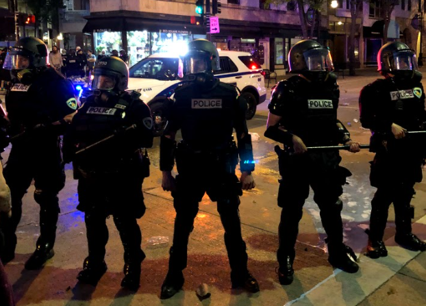
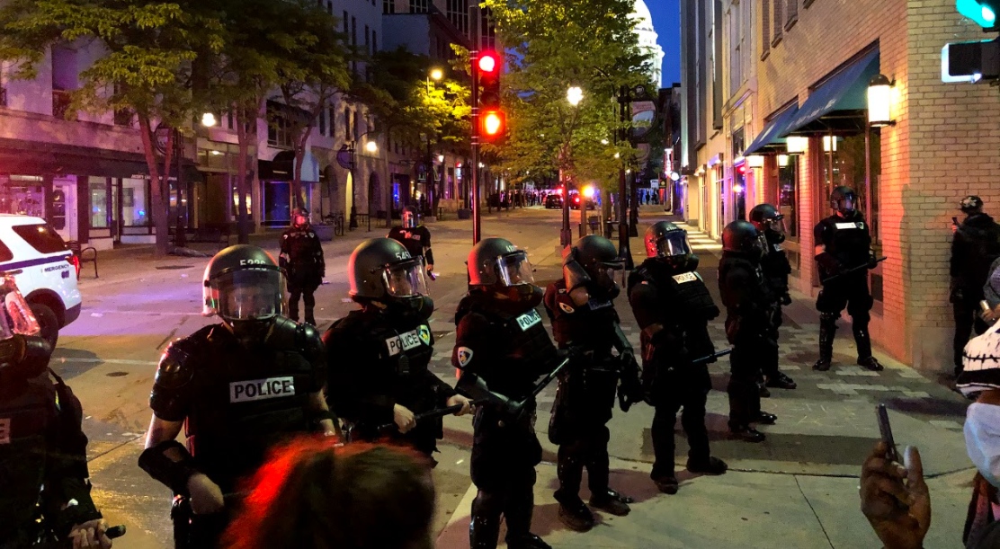
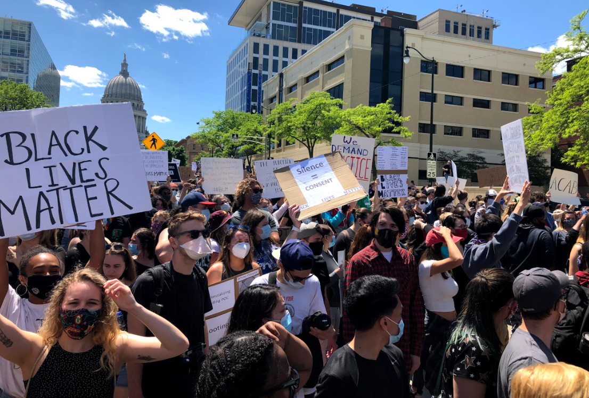
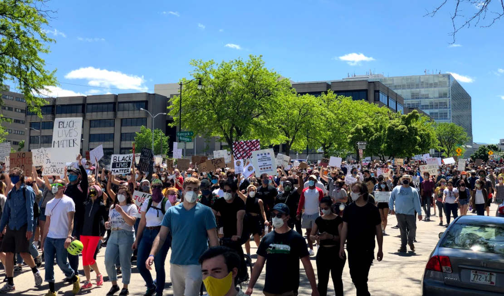

No matter where you live, your land is governed by some type of government. Fortunately for us, the United States of America is a democratic republic, meaning we elect our governing officials. Because we have a say in who rules over our country, it is extremely important we be knowledgable about who is running and what they stand for.
The police line on State St. was a direct result of protests of the murder of George Floyd. The protests weren't from the actual killing, but instead from the lack of justice that fails to be served time and time again. The people of America have an obligation to be knowledgeable and involved in politics because it directly affects their lives and those around them.
 In order to be a voter in the USA, one must be 18 years or older on election day, a U.S. citizen, and reside in your county for at least 30 days, and in some states, you cannot be a felon. A vast majority of America fits within those qualifications meaning a vast majority of America has the ability to pick their local, as well as national, politicians! Regardless of political party standing, people should participate in a democracy because it's a government for the people, by the people; and you can't have that without voters.
 I grew up in an extremely conservative household. My dad has been a lifelong Republican and never once thought about changing. Obviously as a kid I thought the same things my parents did so I became one as well. As I got older and started independently educating myself on current issues, I started to realize I didn't quite agree with everything my dad did. Once I got to college, I really realized how much we disagreed on topics and I became upset that an older generation like my dad's was making all the decisions in our country because he was in the largest voting demographic.
The day I turned 18 I was extremely excited because I was finally old enough to vote in an election, and really start to make a difference in our country. I felt like I was doing my part to help America get to a better place that is truly inviting and adequate for everyone, not just one kind of person. I feel like I'm a part of the future of the United States of America.